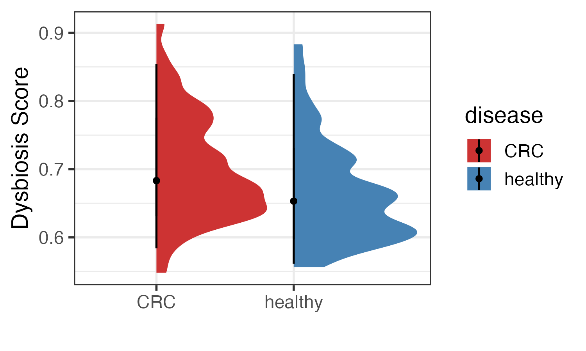
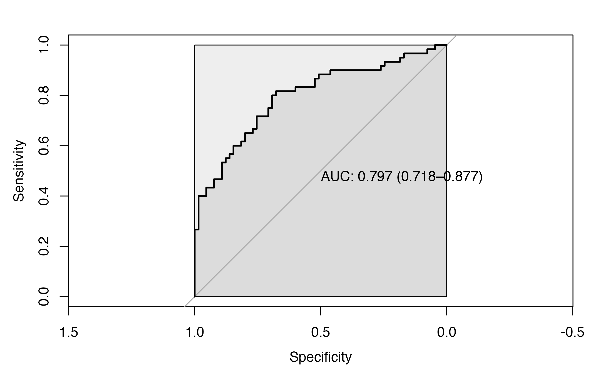
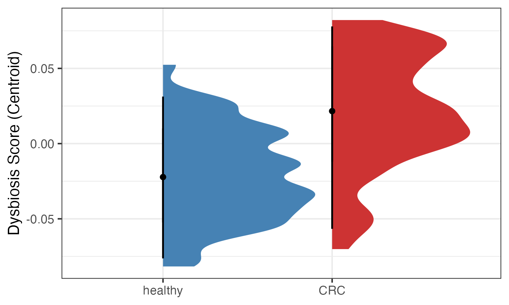
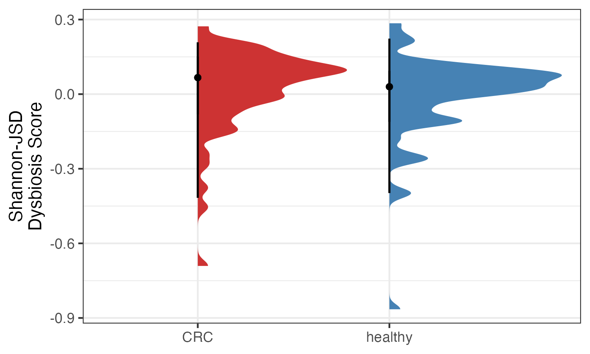
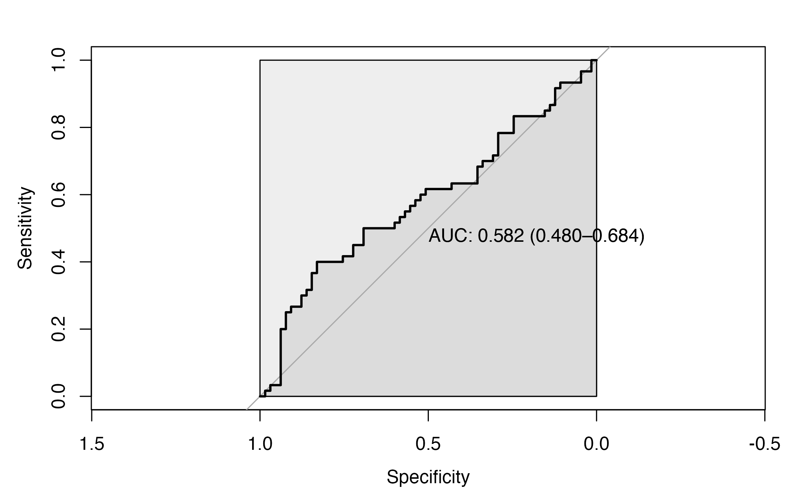
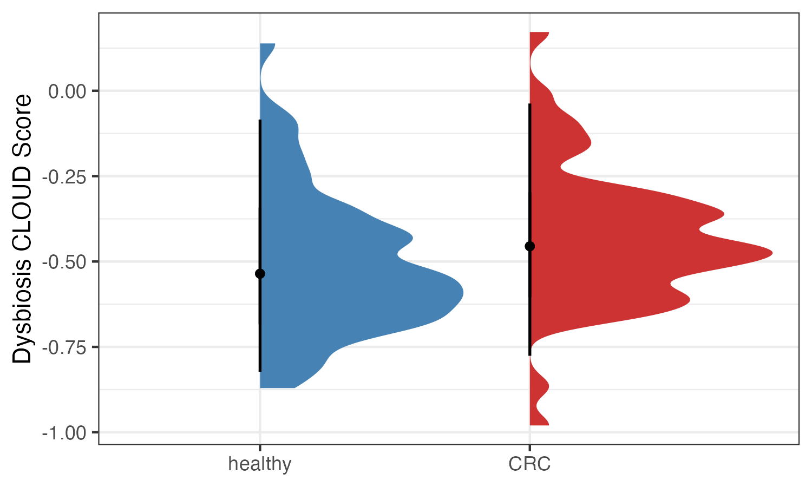
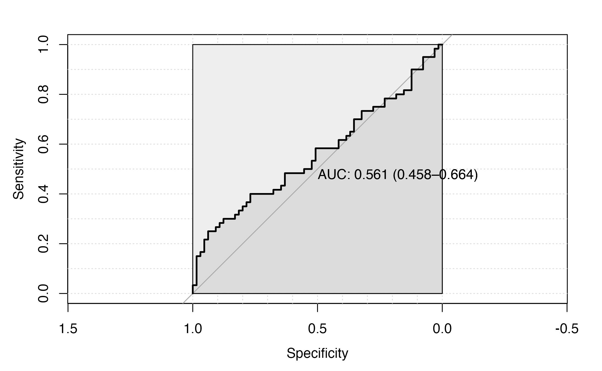
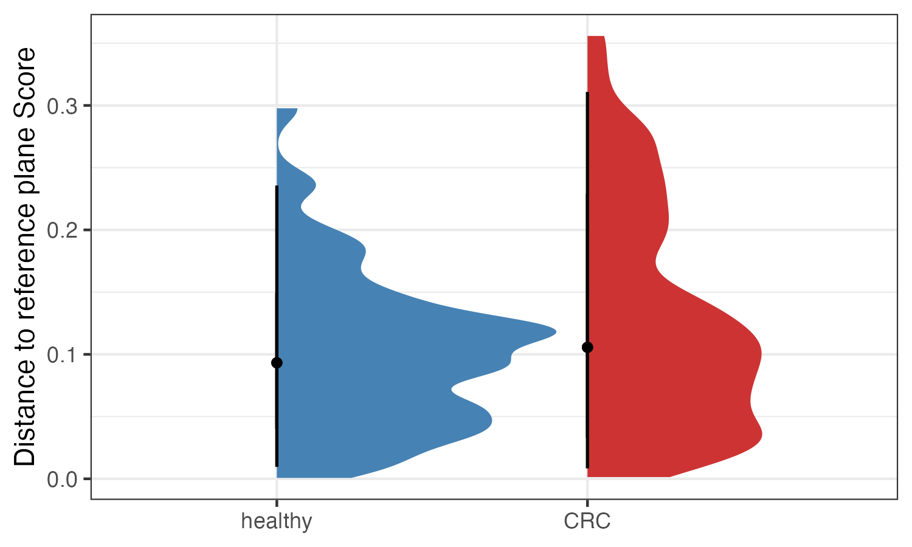

In human microbiome research, there is interest in measuring
“dysbiosis” which in many cases relies on comparing a case group with a
control (without known disease). Several methods have been reported in
literature and reviewed by Wei S et al., in their 2021 article Determining gut microbial
dysbiosis: a review of applied indexes for assessment of intestinal
microbiota imbalances. The dysbiosisR provides tools
for five approaches covering three different methods: Neighborhood
classification, Random forest prediction and Combined alpha-beta
diversity.
It is important to note that the term ‘dysbiosis’ is a vaguely
defined term in most instances and different methods are employed. We
noticed a lack of tools for convenient and reproducible measurement of
“dysbiosis” measures/scores/index. To address this gap we accumulated
some commonly used approaches into a more standardized manner in an R
package we call dysbiosisR.
We would also like to direct the readers and users to debates
surrounding the concept of dysbiosis and suggest to interpret these
measures by considering its pitfalls.
Load libraries
library(dysbiosisR)
library(ggplot2)
library(microbiome)
library(dplyr)
data("WirbelJ_2018")Print the available methods.
dysbiosisOverview()
#> You are using dysbiosisR version: [1] '1.0.1'
#>
#> Following score (s) are currently supported
#> 1. dysbiosisMedianCLV: Lloyd-Price J, Arze CAnanthakrishnan AN et al. (2019)
#> 2. euclideanDistCentroids: AlShawaqfeh MK et al. (2017)
#> 3. cloudStatistic: Montassier E et al. (2018)
#> 4. combinedShannonJSD: Santiago M et al. (2019)
#> 5. dysbiosisOBB: Saffouri GB, Shields-Cutler R et al. (2019)Here we use the test data from Wirbel J et al., (2018). The data consists of CRC and controls samples.
Data
WirbelJ_2018
#> phyloseq-class experiment-level object
#> otu_table() OTU Table: [ 530 taxa and 125 samples ]
#> sample_data() Sample Data: [ 125 samples by 24 sample variables ]
#> tax_table() Taxonomy Table: [ 530 taxa by 6 taxonomic ranks ]
#> phy_tree() Phylogenetic Tree: [ 530 tips and 529 internal nodes ]
# check first five sample sums
sample_sums(WirbelJ_2018)[1:5]
#> CCMD11006829ST-21-0 CCMD12232071ST-21-0 CCMD13071240ST-21-0 CCMD13934959ST-21-0
#> 99.83789 99.98053 99.92165 99.95711
#> CCMD14479708ST-21-0
#> 98.87883These are relative abundance data.
table(sample_data(WirbelJ_2018)$disease)
#>
#> CRC healthy
#> 60 65There are 60 CRC samples and 65 control/healthy samples.
Dysbiosis Measures
Dysbiosis score based on median community level variation
Calculates median variation in a given sample compared to a reference sample group. Here will calculate median variation for a sample compared to a reference sample set. The user can provide a custom distance matrix. If the user provides a Bray-Curtis dissimilarity matrix, then the resulting score is comparable to the ‘dysbiosis score’ reported in Lloyd-Price J, Arze C, Ananthakrishnan AN et al. (2019)
dist.mat <- phyloseq::distance(WirbelJ_2018, "bray")
# get reference samples
ref.samples <- sample_names(subset_samples(WirbelJ_2018,
disease == "healthy"))
dysbiosis_1 <- dysbiosisMedianCLV(WirbelJ_2018,
dist_mat = dist.mat,
reference_samples = ref.samples)The original article identifies highly divergent samples from the
reference set using the 90th percentile of the dysbiosis score. This can
be identified using the quantile function.
dysbiosis_thres <- quantile(subset(dysbiosis_1, disease == "CRC")$score, 0.9)
normobiosis_thres <- quantile(subset(dysbiosis_1, disease == "CRC")$score, 0.1)
dysbiosis_1 <- dysbiosis_1 |>
mutate(isDysbiostic = ifelse(score >= dysbiosis_thres, TRUE, FALSE))
# check in each group how many satisfy the threshold
dysbiosis_1 |>
dplyr::count(disease, isDysbiostic)
#> disease isDysbiostic n
#> 1 CRC FALSE 54
#> 2 CRC TRUE 6
#> 3 healthy FALSE 61
#> 4 healthy TRUE 4Visualize Dysbiosis Score between CRC and healthy group.
p1 <- plotDysbiosis(df=dysbiosis_1,
xvar="disease",
yvar="score",
colors=c(CRC="brown3", healthy="steelblue"),
show_points = FALSE) +
labs(x="", y="Dysbiosis Score") +
theme_bw(base_size = 14)
p1
# order the data
dysbiosis_1$disease <- factor(dysbiosis_1$disease,
levels = c("healthy", "CRC"))
roc_1 <- pROC::roc(as.factor(dysbiosis_1$disease),
dysbiosis_1$score ,
#direction= ">",
plot=TRUE,
ci = TRUE,
auc.polygon=TRUE,
max.auc.polygon=TRUE,
print.auc=TRUE)
The AUC for this approach is 0.6469.
Dysbiosis score based on Euclidean distance to group centroids
Calculates difference in euclidean distance (ED) for a
sample to group centroids. For example, sample_1 to control centroid
minus sample_1 to case centroid. The user can provide a custom distance
matrix. This approach was used in AlShawaqfeh MK et
al. (2017).
dysbiosis_2 <- euclideanDistCentroids(WirbelJ_2018,
dist_mat = dist.mat,
use_squared = TRUE,
group_col = "disease",
control_label = "healthy",
case_label = "CRC")
dysbiosis_2[1:3,1:3]
#> CentroidDist_CRC CentroidDist_healthy CentroidDist_score
#> CCMD11006829ST-21-0 0.2912347 0.3684569 0.07722225
#> CCMD12232071ST-21-0 0.2744104 0.3415175 0.06710710
#> CCMD13071240ST-21-0 0.2172320 0.2697302 0.05249821Here, the CentroidDist_score can be used as a dysbiosis
score.
# order the data
dysbiosis_2$disease <- factor(dysbiosis_2$disease,
levels = c("healthy", "CRC"))
roc_2 <- pROC::roc(as.factor(dysbiosis_2$disease),
dysbiosis_2$CentroidDist_score ,
#direction= ">",
plot=TRUE,
ci = TRUE,
auc.polygon=TRUE,
max.auc.polygon=TRUE,
print.auc=TRUE)
The AUC for this approach is 0.797.
p3 <- plotDysbiosis(df=dysbiosis_2,
xvar="disease",
yvar="CentroidDist_score",
colors=c(CRC="brown3", healthy="steelblue"),
show_points = FALSE) +
labs(x="", y="Dysbiosis Score (Centroid)")
p3
Combined Alpha Beta Diveristy Based Score
The combined alpha-beta diversity approach was used by Santiago M E et al. 2019. This approach uses Shannon diversity as the alpha diversity measure and Jensen–Shannon divergence as the beta diversity measure. The score is mean difference of Shannon diversity between test sample and all references samples multiplied by the mean JSD of the test sample to all reference samples. When calculating this score for reference samples, the sample being used is excluded from calculating means for alpha and beta diversity.
dysbiosis_3 <- combinedShannonJSD(WirbelJ_2018,
reference_samples = ref.samples)
dysbiosis_3[1:3,1:3]
#> ShannonJSDScore study_name subject_id
#> CCMD11006829ST-21-0 0.19887588 WirbelJ_2018 CCMD11006829ST-21-0
#> CCMD12232071ST-21-0 0.07682596 WirbelJ_2018 CCMD12232071ST-21-0
#> CCMD13071240ST-21-0 0.19646724 WirbelJ_2018 CCMD13071240ST-21-0
p4 <- plotDysbiosis(df=dysbiosis_3,
xvar="disease",
yvar="ShannonJSDScore",
colors=c(CRC="brown3", healthy="steelblue"),
show_points = FALSE)+
labs(x="", y="Shannon-JSD\nDysbiosis Score")
p4
# order the data
dysbiosis_3$disease <- factor(dysbiosis_3$disease,
levels = c("healthy", "CRC"))
roc_3 <- pROC::roc(as.factor(dysbiosis_3$disease),
dysbiosis_3$ShannonJSDScore ,
#direction= ">",
plot=TRUE,
ci = TRUE,
auc.polygon=TRUE,
max.auc.polygon=TRUE,
print.auc=TRUE)
The AUC for this approach is 0.582.
Cloud-based LOcally linear Unbiased Dysbiosis (CLOUD) test
Cloud-based LOcally linear Unbiased Dysbiosis (CLOUD) test is a
non-parametric test and returns a measure of dysbiosis. The function was
adapted from the original article by Montassier
E et al. 2018. Here, a user defines a set of reference samples from
which distance of every other sample is calculated. When calculating the
CLOUD stats the k is an important parameter
specified by argument k_num. By default we use a
conservative 80 percent of the samples in each group.
cloud.results <- cloudStatistic(WirbelJ_2018,
dist_mat = dist.mat,
reference_samples = ref.samples,
ndim=-1,
k_num=5)
cloud.results[1:3,1:5]
#> stats pvals log2Stats study_name subject_id
#> CCMD10032470ST-11-0 0.6673767 1 -0.5834267 WirbelJ_2018 CCMD10032470ST-11-0
#> CCMD10191450ST-11-0 0.6603512 1 -0.5986947 WirbelJ_2018 CCMD10191450ST-11-0
#> CCMD11006829ST-21-0 0.8141492 1 -0.2966349 WirbelJ_2018 CCMD11006829ST-21-0Here, the log2Stats can be used as a dysbiosis
score.
# order the data
cloud.results$disease <- factor(cloud.results$disease,
levels = c("healthy", "CRC"))
roc_4 <- pROC::roc(as.factor(cloud.results$disease),
cloud.results$log2Stats ,
#direction= ">",
plot=TRUE,
ci = TRUE,
auc.polygon=TRUE,
max.auc.polygon=TRUE,
print.auc=TRUE)The AUC for this approach is 0.631.
p2 <- plotDysbiosis(df=cloud.results,
xvar="disease",
yvar="log2Stats",
colors=c(CRC="brown3", healthy="steelblue"),
show_points = FALSE) +
labs(x="", y="Dysbiosis CLOUD Score")
p2
Random Forest Prediction Based Score
The original article Saffouri GB,
Shields-Cutler R et al. 2019 reported a Symptom Index abbreviated as
SI. In this approach the feature abundances are used for Random Forest
classification and the resulting out of bag (OOB) predicted probability
of being classified in disease group is considered as an SI or also
dysbiosis index. The dysbiosisOBB function in this package
allows for calculating this measure with some level of freedom of
tuneRF and random forest parameters via the
randomForest R package.
# data are relative abundances summed to 100 or
# near 100 val
dysbiosis.oob <- dysbiosisOBB(WirbelJ_2018,
group_col = "disease",
case_label = "CRC",
seed_value = 1235,
add_tuneRF_params = list(ntreeTry=100,
stepFactor=1.5,
improve=0.01,
trace=TRUE,
dobest=FALSE),
ntree = 100,
plot_roc = TRUE)
#> mtry = 23 OOB error = 20.8%
#> Searching left ...
#> mtry = 16 OOB error = 22.4%
#> -0.07692308 0.01
#> Searching right ...
#> mtry = 34 OOB error = 19.2%
#> 0.07692308 0.01
#> mtry = 51 OOB error = 17.6%
#> 0.08333333 0.01
#> mtry = 76 OOB error = 18.4%
#> -0.04545455 0.01
Visualize
p5 <- plotDysbiosis(df=dysbiosis.oob,
xvar="disease",
yvar="oob.score",
colors=c(CRC="brown3", healthy="steelblue"),
show_points = FALSE)+
labs(x="", y="OOB Dysbiosis Score")
p5All these measure may be influenced by host factors such as age, gender, BMI, etc. It is advised to investigate these factors when analyzing the dysbiosis measures.
Gradient plot
Current dysbiosis measures do not necessarily reveal a yes and no
classification of healthy and disease states. This is a challenge in gut
microbiome research where individuality plays an important role. To
demonstrate this, we can visualize this gradient with
plotDysbiosisGradient. We use the results from the the
random forest prediction based score and dysbiosisMedianCLV
approach along with the dysbiosis_thres and
normobiosis_thres values we obtained above.
# define gradient cols
# browns <- c("#723d46", "#86525b", "#996770", "#ad7d86",
# "#c1949d", "#d6abb4", "#eac3cc", "#ede5e6")
volcano <- c("#003f5c", "#58508d","#bc5090","#ff6361", "#ffa600")
# RF OOB
p.obb <- plotDysbiosisGradient(df=dysbiosis.oob,
score="oob.score",
high_line = 0.5,
# low_line = normobiosis_thres,
group_var = "disease",
group_colors=c("healthy" = "steelblue",
"CRC"= "brown3"),
point_size = 2,
bg_colors = rev(volcano),
jitter_width = 0.1) +
labs(y="Dysbiosis Score", subtitle = "RF OOB Probability") +
# adjust the x and y values to fit to plot
ggplot2::annotate("text", x = 0.7, y = 0.55,
label = "OOB probability\n(0.5)", color="white")
# Median CLV
p.clv <- plotDysbiosisGradient(df=dysbiosis_1,
score="score",
high_line = dysbiosis_thres,
low_line = normobiosis_thres,
group_var = "disease",
group_colors=c("healthy" = "steelblue",
"CRC"= "brown3"),
point_size = 2,
bg_colors = rev(volcano),
jitter_width = 0.1) +
labs(y="Dysbiosis Score", subtitle = "Median CLV") +
# adjust the x and y values to fit to plot
ggplot2::annotate("text", x = 0.6, y = dysbiosis_thres+0.03,
label = "Dysbiosis\nThreshold", color="white")+
ggplot2::annotate("text", x = 0.65, y = normobiosis_thres-0.03,
label = "Normobiosis\nThreshold", color="white")Combine the two plots using patchwork
library(patchwork)
p.obb + p.clv + plot_layout(guides = "collect")
Additional notes: The ROC AUC curves generated for a single data set are susceptible to over fitting or under fitting and therefore, the dysbiosis scores should be considered to be data specific. In order to build/use generalized prediction models based on dysbiosis measures and inferred cut-offs, different training and test data must be used. We see the application of these dysbiosis measure more specifically for single data sets where one would like to ‘capture disease associated imbalance’ into a single sample specific score. This score may be used to check for associations with other disease related features.
Caution: The dysbiosis score in itself does not tell anything about the cause or consequence and hence careful interpretation is of paramount importance.
Here, for example we ask how different is the gut microbiota at different CRC stages compared to control gut microbiota? We can look at two measures, alpha diversity and dysbiosis score in different CRC stages.
# get alpha diversity example Shannon diversity
sample_data(WirbelJ_2018)$shannon <- microbiome::diversity(WirbelJ_2018, "shannon")[,1]
shannon.plot <- meta(WirbelJ_2018) |>
mutate(crc.stage = ifelse(is.na(ajcc), "CTRL", ajcc)) |>
mutate(crc.stage = factor(crc.stage, levels= c("CTRL", "0", "i", "ii", "iii", "iv"))) |>
ggplot(aes(crc.stage, shannon)) +
geom_boxplot(width=0.5, aes(color=disease))+
geom_jitter(width = 0.2, aes(color=disease)) +
theme_bw() +
labs(x="CRC stages", y="Shannon") +
scale_color_manual("Disease", values = c("healthy" = "steelblue",
"CRC"= "brown3"))
# random forest prediction based score
dys.plot <- dysbiosis.oob |>
mutate(crc.stage = ifelse(is.na(ajcc), "CTRL", ajcc)) |>
mutate(crc.stage = factor(crc.stage, levels= c("CTRL", "0", "i", "ii", "iii", "iv"))) |>
ggplot(aes(crc.stage, oob.score)) +
geom_boxplot(width=0.5, aes(color=disease))+
geom_jitter(width = 0.1, aes(color=disease)) +
theme_bw() +
labs(x="CRC stages", y="Dysbiosis Score\n(RF OOB)") +
scale_color_manual("Disease", values = c("healthy" = "steelblue",
"CRC"= "brown3"))
shannon.plot + dys.plot + plot_layout(guides = "collect")
sessionInfo()
#> R version 4.2.1 (2022-06-23 ucrt)
#> Platform: x86_64-w64-mingw32/x64 (64-bit)
#> Running under: Windows 10 x64 (build 19044)
#>
#> Matrix products: default
#>
#> locale:
#> [1] LC_COLLATE=English_United States.utf8
#> [2] LC_CTYPE=English_United States.utf8
#> [3] LC_MONETARY=English_United States.utf8
#> [4] LC_NUMERIC=C
#> [5] LC_TIME=English_United States.utf8
#>
#> attached base packages:
#> [1] stats graphics grDevices utils datasets methods base
#>
#> other attached packages:
#> [1] patchwork_1.1.2 dplyr_1.0.9 dysbiosisR_1.0.1 microbiome_1.18.0
#> [5] ggplot2_3.3.6 phyloseq_1.40.0
#>
#> loaded via a namespace (and not attached):
#> [1] nlme_3.1-157 bitops_1.0-7 fs_1.5.2
#> [4] usedist_0.4.0 RColorBrewer_1.1-3 rprojroot_2.0.3
#> [7] GenomeInfoDb_1.32.2 tools_4.2.1 bslib_0.4.0
#> [10] utf8_1.2.2 R6_2.5.1 vegan_2.6-2
#> [13] ggdist_3.2.0 DBI_1.1.3 BiocGenerics_0.42.0
#> [16] mgcv_1.8-40 colorspace_2.0-3 permute_0.9-7
#> [19] rhdf5filters_1.8.0 ade4_1.7-19 withr_2.5.0
#> [22] tidyselect_1.1.2 compiler_4.2.1 textshaping_0.3.6
#> [25] cli_3.3.0 Biobase_2.56.0 desc_1.4.2
#> [28] labeling_0.4.2 sass_0.4.2 scales_1.2.1
#> [31] randomForest_4.7-1.1 pkgdown_2.0.6 systemfonts_1.0.4
#> [34] stringr_1.4.1 digest_0.6.29 rmarkdown_2.16
#> [37] XVector_0.36.0 pkgconfig_2.0.3 htmltools_0.5.3
#> [40] highr_0.9 fastmap_1.1.0 rlang_1.0.5
#> [43] rstudioapi_0.14 farver_2.1.1 jquerylib_0.1.4
#> [46] generics_0.1.3 jsonlite_1.8.0 distributional_0.3.1
#> [49] RCurl_1.98-1.6 magrittr_2.0.3 GenomeInfoDbData_1.2.8
#> [52] biomformat_1.24.0 Matrix_1.5-1 Rcpp_1.0.8.3
#> [55] munsell_0.5.0 S4Vectors_0.34.0 Rhdf5lib_1.18.2
#> [58] fansi_1.0.3 ape_5.6-2 lifecycle_1.0.2
#> [61] pROC_1.18.0 stringi_1.7.6 yaml_2.3.5
#> [64] MASS_7.3-57 zlibbioc_1.42.0 rhdf5_2.40.0
#> [67] Rtsne_0.16 plyr_1.8.7 grid_4.2.1
#> [70] parallel_4.2.1 crayon_1.5.1 lattice_0.20-45
#> [73] Biostrings_2.64.0 splines_4.2.1 multtest_2.52.0
#> [76] knitr_1.40 pillar_1.8.1 igraph_1.3.1
#> [79] reshape2_1.4.4 codetools_0.2-18 stats4_4.2.1
#> [82] glue_1.6.2 evaluate_0.16 data.table_1.14.2
#> [85] vctrs_0.4.1 foreach_1.5.2 gtable_0.3.1
#> [88] purrr_0.3.4 tidyr_1.2.0 assertthat_0.2.1
#> [91] cachem_1.0.6 xfun_0.31 ragg_1.2.2
#> [94] survival_3.3-1 tibble_3.1.7 iterators_1.0.14
#> [97] memoise_2.0.1 IRanges_2.30.0 cluster_2.1.3
#> [100] ellipsis_0.3.2